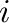
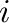

Next: Cluster expansion construction using Up: User guide Previous: Introduction
While there exist numerous methodologies that enable the calculation of thermodynamic properties from first principles, we will focus on the following two-step approach (see Figure 5.1). First, a compact representation of the energetics of an alloy, known as the cluster expansion [18,6,5,28], is constructed using first-principles calculations of the formation energies of various atomic arrangements. Second, the cluster expansion is used as a Hamiltonian for Monte Carlo simulations [16,2,8,15] that can provide the thermodynamic properties of interest, such as the free energy of a phase or short-range-order parameters as a function of temperature and concentration. This two-step approach is essential, because the calculation of thermodynamic quantities through Monte Carlo involves averaging the property of interest over many different atomic configurations and it would be infeasible to calculate the energy of each of these configurations from first principles. The cluster expansion enables the prediction of the energy of any configuration from the knowledge of the energies of a small number of configurations (typically between 30 and 50), thus making the procedure amenable to the use of first-principles methods.
Formally, the cluster expansion is defined by first assigning
occupation variables  to each site  of the parent lattice,
which is defined as the set of all the atomic sites that can be occupied by one of
a few possible atomic species. In the common case of a binary alloy system,
the occupation variables take the value
to each site  of the parent lattice,
which is defined as the set of all the atomic sites that can be occupied by one of
a few possible atomic species. In the common case of a binary alloy system,
the occupation variables take the value  or depending
on the type of atom occupying the site. A particular arrangement of these “spins” on
the parent lattice is called a configuration and can be represented
by a vector
containing the value of the occupation
variable for each site in the parent lattice. Although we focus here on the
case of binary alloys, this framework can be extended to arbitrary
multicomponent alloys (the appropriate formalism is presented in [18]).
or depending
on the type of atom occupying the site. A particular arrangement of these “spins” on
the parent lattice is called a configuration and can be represented
by a vector
containing the value of the occupation
variable for each site in the parent lattice. Although we focus here on the
case of binary alloys, this framework can be extended to arbitrary
multicomponent alloys (the appropriate formalism is presented in [18]).
The cluster expansion then parametrizes the energy (per atom) of the alloy as a polynomial in the occupation variables:
where is a cluster (a set of sites ). The sum is taken over all
clusters that are not equivalent by a symmetry operation of the
space group of the parent lattice, while the average is taken over all
clusters
that are equivalent to by symmetry.
The coefficients in this expansion embody the information
regarding the energetics of the alloy and are called the effective cluster
interaction (ECI). The multiplicities indicate the
number of clusters that are equivalent by symmetry to (divided by
the number of lattice sites).
is a cluster (a set of sites ). The sum is taken over all
clusters that are not equivalent by a symmetry operation of the
space group of the parent lattice, while the average is taken over all
clusters
that are equivalent to by symmetry.
The coefficients in this expansion embody the information
regarding the energetics of the alloy and are called the effective cluster
interaction (ECI). The multiplicities indicate the
number of clusters that are equivalent by symmetry to (divided by
the number of lattice sites).
It can be shown that when all clusters are considered in
the sum, the cluster expansion is able to represent any function
of configuration
by an
appropriate selection of the values of . However, the real
advantage of the cluster expansion is that, in practice, it is found to
converge rapidly. An accuracy that is sufficient for phase diagram
calculations can be achieved by keeping only clusters that are
relatively compact (e.g. short-range pairs or small triplets). The
unknown parameters of the cluster expansion (the ECI) can then be determined by
fitting them to the energy of a relatively small number of configurations
obtained through first-principles computations. This approach
is known as the Structure Inversion Method (SIM) or the Collony-Williams
[4] method.
The cluster expansion thus presents an extremely concise and practical way to model the configurational dependence of an alloy's energy. A typical well-converged cluster expansion of the energy of an alloy consists of about 10 to 20 ECI and necessitates the calculation of the energy of around 30 to 50 ordered structures (see, for instance, [25,9,17]). Once the cluster expansion has been constructed, the energy of any configuration can be calculated using Equation 5.1 at a very small computational cost. This enables the use of various statistical mechanical techniques such as Monte Carlo simulations [2], the low-temperature expansion (LTE) [11,6], the high-temperature expansion (HTE) [6], or the cluster variation method (CVM) [10,6] to calculate thermodynamic properties and phase diagrams. The atat software implements Monte Carlo simulations, the LTE and the HTE.
![\includegraphics[width=1.0\textwidth]{mapsemc2}](img15.png) |
Paralleling the two-step approach described in the previous section, atat consists of two main computer programs (see Figure 5.1). The cluster expansion construction is performed by the MIT Ab initio Phase Stability (MAPS) code [24], while the Monte Carlo simulations are driven by the Easy Monte Carlo Code (EMC2), developed at Northwestern University [22]. Each of these codes will be discussed in turn.
While the present user guide describes how the atat software can be used to carry out all the steps necessary for the calculation of thermodynamic properties from first principles, it must be emphasized that each part of the toolkit can be used as a stand-alone code. For instance, many users may have access to an existing cluster expansion obtained through the SIM or other popular methods, such as concentration-wave-based methods (see, for instance, [7,6,21]). It is then staightforward to setup the appropriate input files to run the emc2 Monte Carlo code. Alternatively, after obtaining a cluster expansion using the maps code, users could choose to calculate thermodynamic properties with the cluster variation method (CVM) [10,6], as implemented in the IMR-CVM code [20]. The modularity of the toolkit actually extends below the level of the maps and emc2 codes -- many of the subroutines underlying these codes can be accessed through stand-alone utilities [23].
avdw@alum.mit.edu Sat, Jun 21, 2025 12:31:12 AM
 (
(